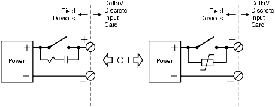
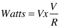
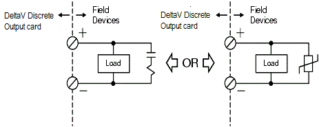
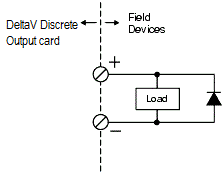

Implementing bussed field power for applications using DI and DO channels
Observe the following guidelines if you implement bussed field power for applications that use DI and DO channels (I/O cards and CHARMs).
If you use DeltaV discrete input cards (isolated or dry contact) to sense a contact closure in a field device, use an arc suppression device at the contact. This arc suppression device can be an R-C snubber or a varistor, as shown in the following figure for isolated discrete inputs.

The following table lists example R-C values based on the load provided by the input card and the formulas provided in the Sizing R-C Snubbers topic.
| Load from Input Card | R Value | C Value |
|---|---|---|
| 24 VDC | 5 kΩ | 2.4 nF |
| 120 VAC | 60 Ω | 0.12 nF |
| 230 VAC | 115 Ω | 0.01 nF |
If you use DeltaV isolated discrete input cards to sense solid state devices such as triacs, you may need to place some resistance in parallel with the input to avoid false triggering due to leakage currents. Size the resistor so that the voltage level generated by leakage current through the switch is less than the upper limit for OFF voltage at the input card. The resistor wattage must support the following calculation for dissipation when the switch is ON:

V=voltage
R=resistance
You can use DeltaV dry contact discrete input cards to sense a solid state device only if the leakage of the switch is less than the upper limit for OFF current of the input card. The following table lists the upper limit of the OFF current for the DeltaV input cards.
| Input Card Voltage Level | Upper Limit of OFF Current |
|---|---|
| 24 VDC | 1 mA |
| 120 VAC | 0.56 mA |
| 230 VAC | 0.28 mA |
If you use DeltaV AC discrete output cards or CHARMs (high-side or isolated) to drive inductive loads such as relay coils, it is recommended that the kickback from the coil be suppressed at the coil with an R-C snubber or a varistor. The following figure is a wiring diagram example for a high-side discrete output. Sizing for the suppressor is load-dependent; refer to the Sizing R-C Snubbers topic and to the documentation for the field device or suppressor.

If you use DC discrete output cards or CHARMs to drive inductive loads such as solenoid valves and relay coils, it is recommended that the kickback from the inductive load is suppressed at the device by a parallel reverse-biased diode (such as a 1N4004). The following figure is a wiring diagram example for a high-side discrete output. Connecting the snubber diode at the load ensures that the output channel circuitry is protected from the inductive kickback in all configurations. Additionally, it suppresses the electrical noise that would otherwise have been generated on the wiring and potentially coupled onto adjacent field wiring.

If your field device has low current requirements, you can connect a loading resistor in parallel with your load to limit the effect of leakage currents on DeltaV discrete AC output channels (cards and CHARMs). Size the resistor to provide a total load of 10 mA and to handle the heat dissipation for this load. For example, a 12 K Ω, 2 W resistor is appropriate for 120 VAC and a 23 K Ω, 3 W resistor is appropriate for 230 VAC.
In electrically noisy environments, place one varistor in parallel with the field terminal blocks at the I/O card or CHARM and another varistor in parallel with the bussed field power connection to the carrier. Size the varistor for 20% above the nominal line voltage.